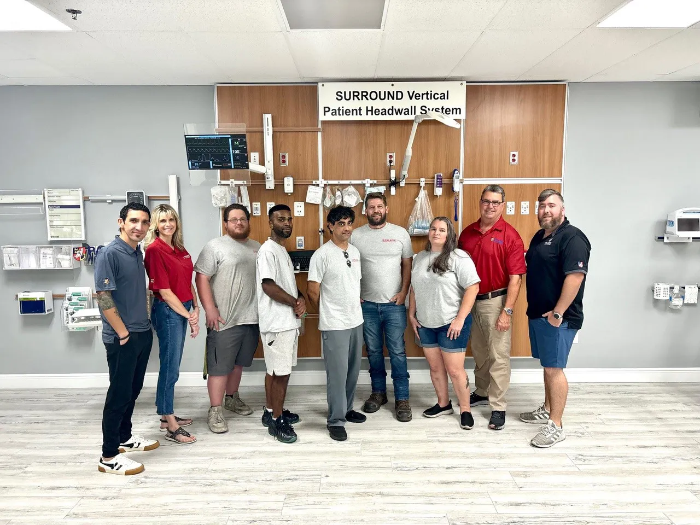

Who we are
Paladin Healthcare®, LLC manufactures and distributes Fairfield-style medical equipment management rail and accessories, architectural headwall systems, and specialty application carts. Our passion is the development of state-of-the-art healthcare facilities that promote clinical efficiency, cleanliness, and excellence for the best quality patient care.
Paladin also manufactures the industry’s only “Universal ONE-Rail” which is completely interchangeable with accessories for Modular, AMICO as well as legacy Fairfield and Hill-Rom headwalls. We also manufacture adapters for each of these systems.
The use of an Equipment Management Rail System in any patient care environment “FUTURE-PROOFS THE FACILITY.” Through a lifecycle of changes, it ensures the continuity and flexibility of the equipment and workflow processes for the duration of the built environment while maintaining the integrity and preserving the value of the wall system, panel, or substrate. The rail system makes it possible to reduce room revenue loss due to changing equipment, par-level bedside inventory, clear valuable floor space, improve cleanliness and reduce HAIs, provide an organized and efficient space for better workflow and HCAHPS scores, and increase hospital profitability.
We partner with industry experts. We love what we do.
